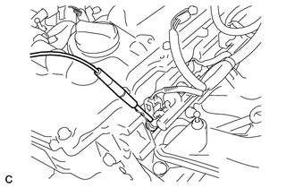
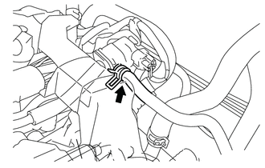

RM3140CG
_51
发动机/混合动力系统
_025038
7ZR-FE 排放控制系统
_0129889
排放控制系统
G
7ZR-FE 排放控制系统 排放控制系统 车上检查
程序

 1.检查燃油切断操作
1.检查燃油切断操作
a.
起动发动机。
b.
使发动机暖机。
c.
将发动机的转速至少增加到 3,000 rpm。
d.

1.354,1.094 0.833,1.094
false
0.979,1.375 1.146,1.375
1.146,1.375 1.688,1.479
false
0.823,1.292 1.125,1.531
0.302,0.24
10
*1
0.646,1.01 0.99,1.25
0.344,0.24
10
*a
| *1 | 喷油器总成 |
| *a | 听诊器 |
使用听诊器检查喷油器的工作声音。
e.
松开加速踏板时，检查并确认喷油器工作声音暂时停止，随后恢复。
如果结果不符合规定，则检查喷油器总成、线束和 ECM。
- 标准:
- CVT:
项目 规定状态 重新开始燃油喷射的发动机转速 1,400 rpm
- 手动传动桥:
项目 规定状态 重新开始燃油喷射的发动机转速 1,500 rpm
2.目视检查软管、连接部位和衬垫
a.
目视检查并确认软管、连接部位和衬垫无破裂、泄漏或损坏。
- 备注：
- ·
发动机机油尺、加注口盖、通风软管或其他零部件拆除或出现其他故障时，可能会导致发动机不能正常运转。
·节气门体和气缸盖之间进气系统零件的断开、松动或破裂引起吸气，将会导致发动机工作异常或故障。
如果发现任何缺陷，则必要时更换零件。
3.检查燃油蒸汽排放控制系统
a.
将 GTS 连接到 DLC3。
b.
起动发动机。
c.
使发动机暖机。
d.
打开 GTS。
e.

滑动卡子并从净化阀（净化 VSV）上断开 1 号燃油蒸汽供给软管。
f.
进入以下菜单：Powertrain / Engine and ECT / Active Test / Activate the VSV for Evap Control。
- Powertrain > Engine and ECT > Active Test
-
检测仪显示 Activate the VSV for Evap Control - 50004 234 6
g.
检查并确认净化阀（净化 VSV）口出现真空。
h.
如果未出现真空，则检查以下项目：
·
净化阀（净化 VSV）
·
连接进气歧管和净化阀（净化 VSV）的 1 号燃油蒸汽供给软管阻塞。
i.
退出主动测试模式，连接 1 号燃油蒸汽供给软管并滑动卡子以将其固定。
j.
进入以下菜单：Powertrain / Engine and ECT / Data List / EVAP Purge VSV。
- Powertrain > Engine and ECT > Data List
-
检测仪显示 EVAP Purge VSV - 50003 234 217
k.
驾驶车辆。
l.
确认净化阀（净化 VSV）打开。
如果结果不符合规定，则更换净化阀（净化 VSV）、线束或 ECM。